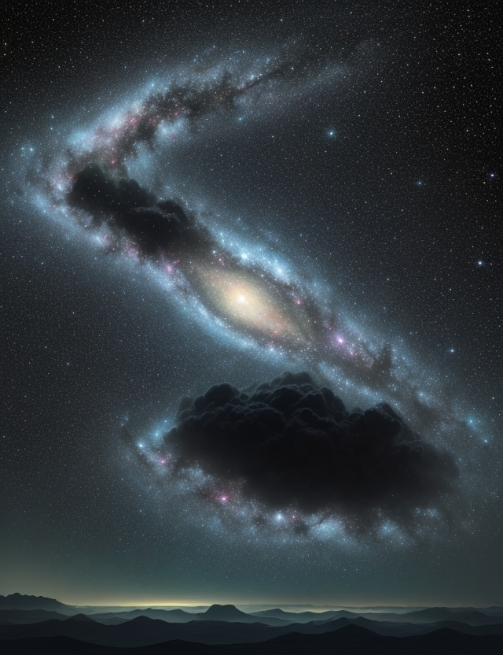

The resolution is 640 x 832px. It was created on 14/11/23 at 3:00 PM. The guidance scale used was 7. The step count is not applicable as it is marked with a "-". The sampler used was Leonardo. The seed is 308248576. No preset was applied. There is no prompt magic. The initial strength is not applicable as there is no init image. There is no high contrast.
Generate a massive 8K astronomic landscape spanning galaxies in the furthest vast reaches of the known universe. Include nebulae, star clusters and single stars sparkling with photorealistic quality against the black void. Apply volumetric lighting techniques to achieve billowy glowing clouds of cosmic dust and gases shining with an ethereal radiance. Populate the scene with as many luminescent celestial bodies as possible, each one characterized with meticulously detailed surfaces and atmospheres. Add a sense of scale and distance by including fledgling solar systems in various stages of formation throughout. For a focal point, include a supermassive black hole in the core of an active galaxy, its event horizon realistically shadowed and delicate accretion discs of trapped matter gracefully orbiting and glowing. Render the entire landscape with cinematic HDR color vibrancy to truly immerse viewers in the natural splendor of the grandeur vastness existing beyond our world.